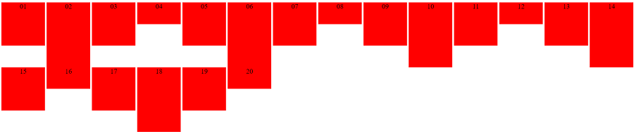
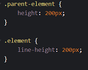
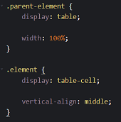

Dit komt door:
text-align:center; Hiermee wordt de tekst gecentreerd.
Omdat center niet bestaat bij vertical-align, als je een div wil centreren moet je middle gebruiken.Het slaat op de blok, niet op de text.
Centreert de div verticaal. Het element wordt geplaatst in het midden het het parent element.
De line-height van het child element geef je dezelfde waarde als de hoogte van het parent element. Het nadeel van deze methode is dat het alleen werkt voor een woord of zin met een enkele regel.

Vertical-align is een CSS eigenschap waarmee je elementen verticaal kan centreren. Deze eigenschap werkt echter alleen voor tabellen en niet voor standaard block elementen. Door de block elementen te wijzigen naar table en table-cell elementen kunnen we echter wel gebruik maken van de vertical-align eigenschap. Het parent element geven we hierbij de waarde 'table' en de child elementen krijgen de waarde 'table-cell'.

Omdat de css code van boven naar beneden wordt gelezen. Wanneer ik de tall boven de area plaats, neemt hij de height van area, wanneer ik de height van tall onder area plaats, neemt hij de height van tall aan.